Scroll down
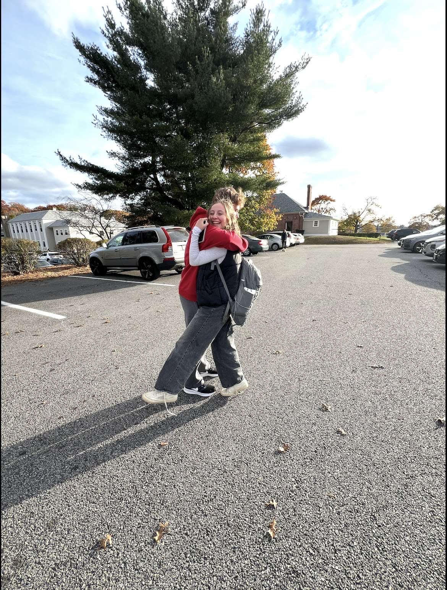 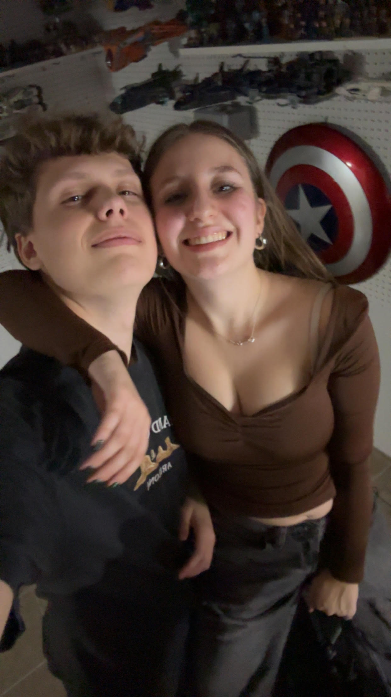 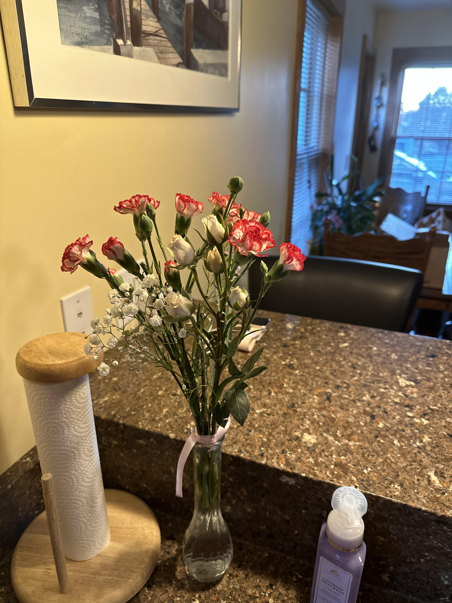 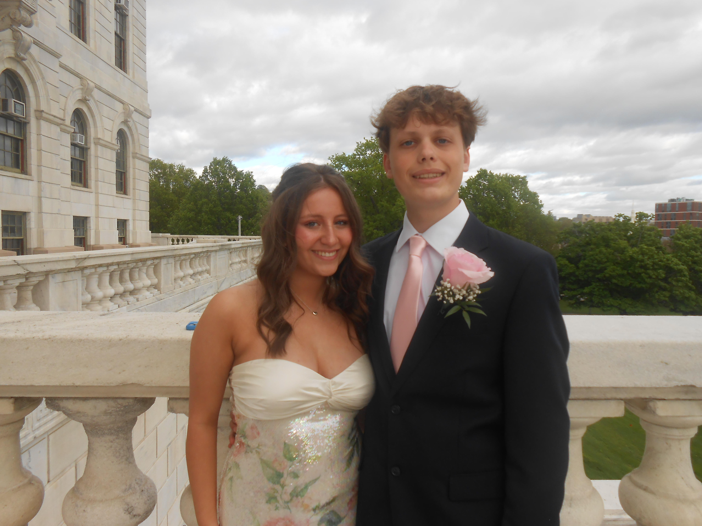 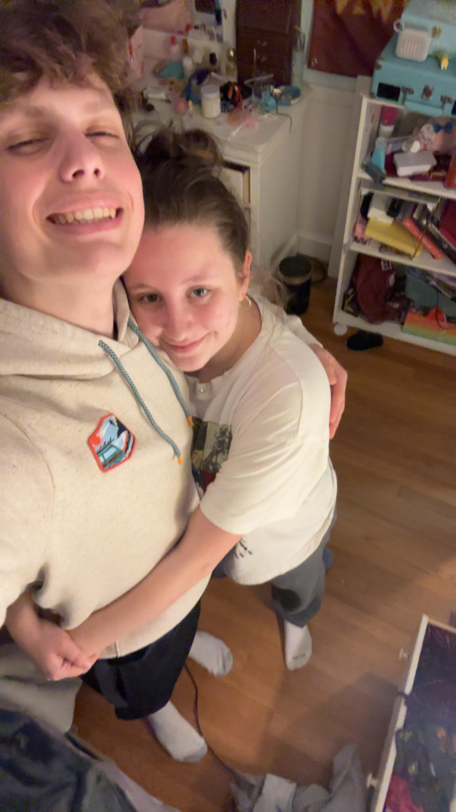 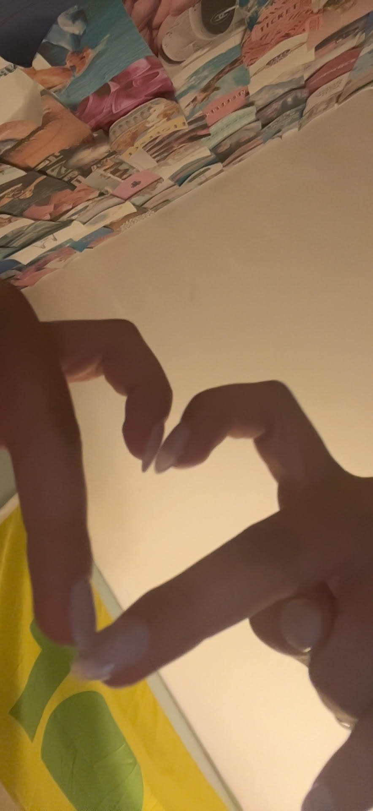To Ally — One Last Letter
Click below to play it so you can hear me read it:
Dear,
Ally ❤
I wrote a lot. Please read all of it and write a response whenever you’re ready. This will actually be my last message to you. I hope that I can make you reconsider all of this.
After all this time we spend together, I’m disappointed that it ended up like this. I wish you could have told me there was a problem before you broke up with me. I understand you don’t want to get back together. I wish we could’ve worked it out or even just tried to instead of just taking easy way out and breaking up when you didn’t feel the same as me.
I’m sorry that I have became unloveable and not the same person you have fallen in love with. I feel the same, however it seems like I am not the same. It brings me great pain that you fell out of love with me and you didn’t tell me til the end. Nor did you tell me to try and fix it.
What’s done is done. I am extremely sad that it ended this way. I wish we could have talked in person and had a proper goodbye. I wish it wasn’t just phone calls and texts and me not knowing if you would text me back or call back.
It all happened so quick and I wish I could have ended with it being resolved. I feel like just being friends would hurt me more than just not talking. If we were just friends I would still wish we were together and it would not allow me to heal.
I really wish it could have worked out. I’m sorry that I have become unloveable to you. I tried. 🥲 It breaks my heart to write this to you. We had our ups and downs. We had fun together and you were my first everything. First kiss, first lover, first dates, first meeting the parents, first gifts, first true feelings. I am forever grateful for this. Even when I had a bad day i always knew I could talk to you about it. It hurts me that I won’t have that type of relationship for a while.
I love being able to talk to you about everything. I love going on dates. I loved everything about our relationship, except the end.
It hurt me to pack up everything you gave me. The picture, the burger and fries, the pikachu plushie. Everything. I wish you could have gotten more use out of the picture I made for you, same with the puzzle. It was only used for 2 days. I wanted you to be able to see me when you wake and and go to bed. I loved looking at our photo and thinking to myself, “that’s my kind, loving, girlfriend!”
Even after the butterflies wore off, I still loved you. I think this is around the time when you questioned if you love me. Just because the butterflies are gone, doesn’t mean you don’t love me (I hope). It just means we are more comfortable with eachother.
I tried to do everything for you. I rearranged my room so we could play games easier. I made sure I pampered you with my love to make sure you knew that I truly love you. I started the Fortnite account business to get money for date nights. I restarted it recently to have enough money to take you wherever you wanted this summer, wether it be expensive or cheap, cringy or cute, small or massive, I wanted to give it to you.
I tried the be the best boyfriend. I wanted to show you what a real relationship is really like. I tried to be friendly and have fun with your friends to fit in, I tried to make your sister feel included, I played with your dogs (and fell in love with them too🫶), I tried to talk to your parents and be friendly with them to show I’m not like your other boyfriends, or for that matter, like anyone else. I wanted to give you, and be, the best. Like no one ever was.
I am still clinging onto this idea that you might want to try and work it out. But unless you have a change of heart, unfortunately this is the end. 😭😭
If you have a change in heart before your vacation is over, let me know.
Otherwise, it was nice to know you and have a good time at Elon and on your vacation.
Again, I just feel disappointed and a tad mad that we broke up over the phone and we couldn’t do it in person. I love you even to the last second. Even now I still kind of do and it pains me to throw away this feeling. I haven’t felt this before and I love it. I’m sorry you didn’t feel the same way. I wish you felt the same happiness I felt when I saw you. It makes me so unbelievably sad that I probably won’t see you in person again. And I didn’t get to have a proper goodbye. 😔
However I am grateful to have loved you so much that it hurts this much to lose you.
I am writing this for two reasons.
1.
to try and let you know how I feel. I hope you can respond to some of the points I made in this essay to give me closure if you are really done.
2.
just to try and give one last go at trying to convince you to stay. I pray that you would. 🙏
College may be hard but knowing that we have eachother will make me (and hopefully you too!) feel so much better about it. At the end of the day, you were the person who I told all my issues to, the person who I loved, the person who I had fun with. Even if we went to college still dating and I can guarantee you will be happy with the result. Even thought it is far away, we can still call text and I’d be willing to make the occasional journey to see you. I will have some suprises that I already had planned for you at Elon that I think you would have loved.
I also had another project in the works too, it was a secret but since you seem to be done with me I’ll tell you. Do you remember the Harry Potter movies and how they had the moving paintings and pictures? I was designing one for you that had us dancing in the frame, like a moving picture. Sadly it was not fully realized due to us not ever really dancing together, and the fact that you are breaking up with me. I would have loved to give that to you. I had so many ideas for it that made me so happy to think about. Like in college I could update the video to something else to remind you of a date we had or something.
I want the best for you. I want to give the best to you. If you would just give me another chance, I feel like I can be the best for you.
I will miss driving to your house whenever I can get the chance to see you.
I will miss playing with dug and penny. I have also grown attached to them and I fell horrible that I have to leave them.
I will miss the funny dinners at your house when your sister says something out of pocket.
I will miss cooking for you (even if it sucked lol). I will miss all the dates with you.
I will miss going to events together.
I will miss the late night drives back from your house, when I was just so thankful to see you.
I will miss lying in my bed thinking of you, and cuddling with my pillows with the thought of you in my head.
I will miss the cute nicknames for eachother, Cutecubie 🥒, and Koala 🐨
I will miss you so much, Ally.
Please make it so I don’t have to miss these things and times with you.
Big changes like this scare me.
I have a deep fear of not finding love again if you are set on breaking up with me. I love the feeling of being able to care for someone, being able to surprise someone with gifts, being able to take someone out on dates. I wish it would still be you. I am scared of finding love. You found me, which made me so unbelievably happy. I love the feeling of love.
In my closet I still have my fancy pants we got together, and the jeans you got me. I still have the shoes we got together in Boston. I still have the hoodie you got me because I couldn’t find anything good in Nashville. I will still keep the Grand Canyon shirt and tell people I visited it. I will still keep the “vacant” shirt you got me. I will keep all these things. It will however pain me to wear them knowing that you can’t appreciate the look of them on me. 😕
I know that you don’t fully love me anymore. I still am not sure why. Maybe I’ll never know. I truly hope that there is a shred of love somewhere inside of you for me still. I want to grow that thread back to be massive. I want to make you love me again. I am not sure how to. I hope this essay will atleast let me try again.
Now that I’ve basically lost you, I am now realizing how greatful I am to have you. If you ultimately decide to try again, I will never forget the feeling of losing you and I will treasure you even more!!!!!!
I know you’re scared about breaking up in college then having to deal with the grief then. I can promise you that I would not do that to you. I thought you wanted to stay together in college, or atleast you wanted to try. I want to try.
You’re probably wondering why I care so much. I care for two reasons.
1. Because I wish you could have told me there was a problem earlier, so I want to at least attempt to fix it before just giving up.
2. Because it’s you. And I think you’re amazing.
I wish I could have changed the outcome. You can still change the outcome! But you seem to have your opinion set in stone. 😞
Lastly, here’s a picture I took at Ryan’s house. I texted it to you along with the link to my site. I think it’s pretty beautiful and I hope you can enjoy it too. It reminds me of our relationship.
Beautiful.
And I’m sad to see it turn from day to night. But it was great while it lasted. I hope to see another sunrise with you if you want to give it a shot.👋
If you would like to give it another chance, react with a heart on the photo. Regardless if we get back together or not, I have a special spot I want to take you to once both our vacations are done. I would like to talk there in person, to either fix this, or to say our final goodbyes.
I deeply hope that I could have persuaded you to give it another shot. I know you seem to have your heart set on breaking up. But I hope I could have changed your mind about all this. 🥒
I know you’re on your way to vacation right now. While you’re away please think of all this. Even if this doesn’t change your mind, I needed to say this to get it off my chest. You mean so much to me and I don’t want to lose you. I want you to know how much you meant to me, and still do.
In case I don't see ya, good afternoon, good evening, and good night.
Ben
 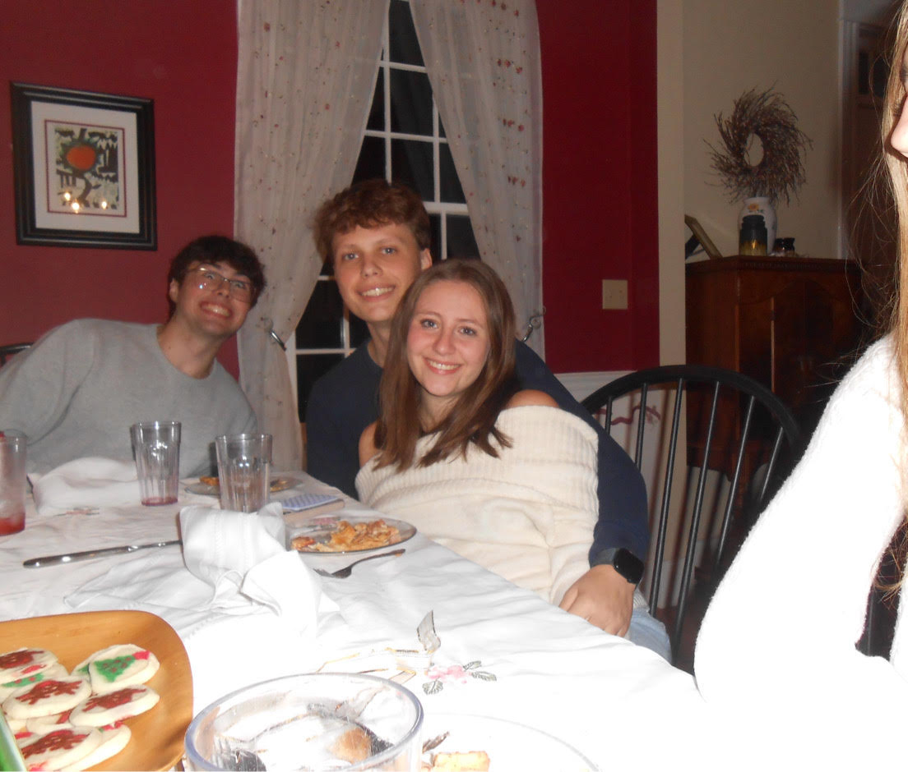
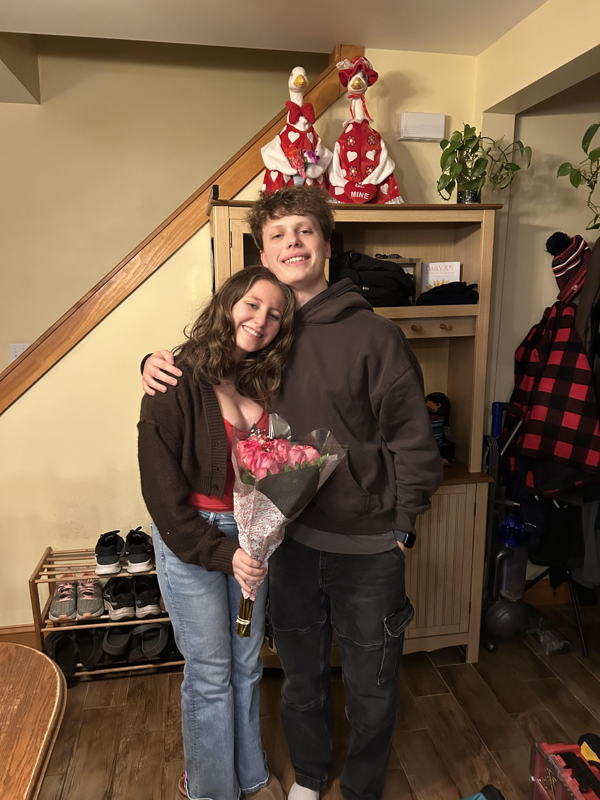
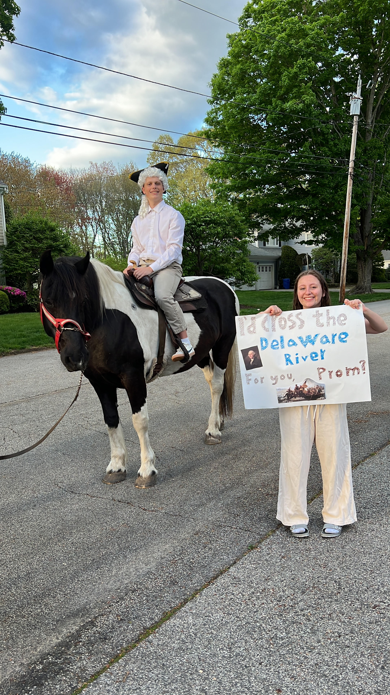
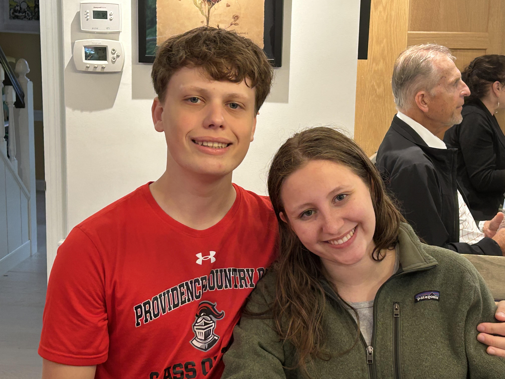
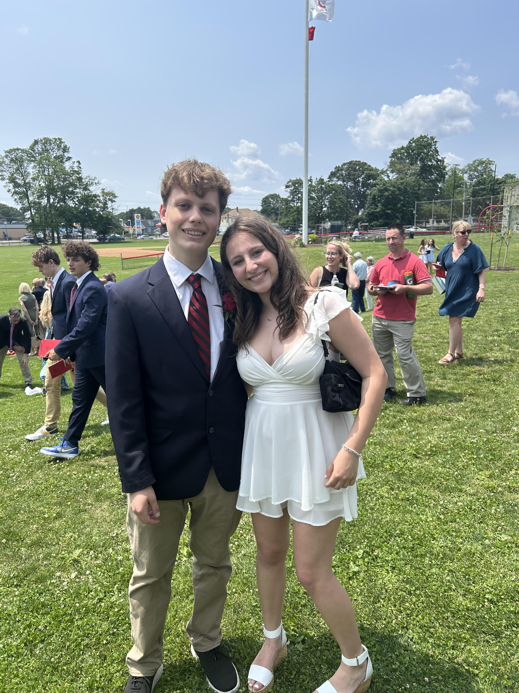
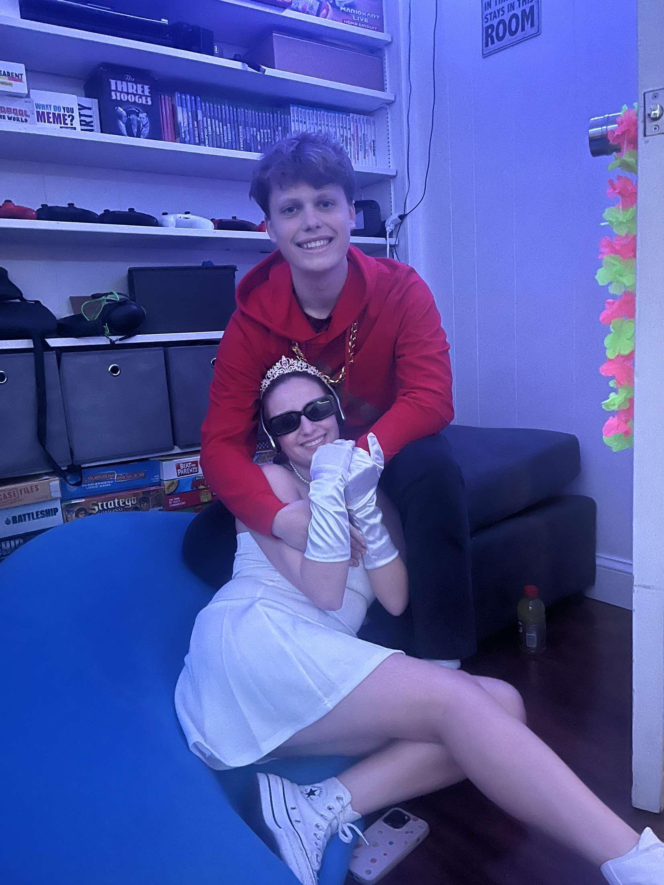
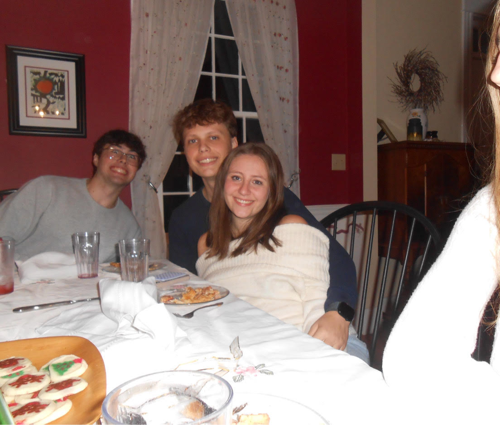
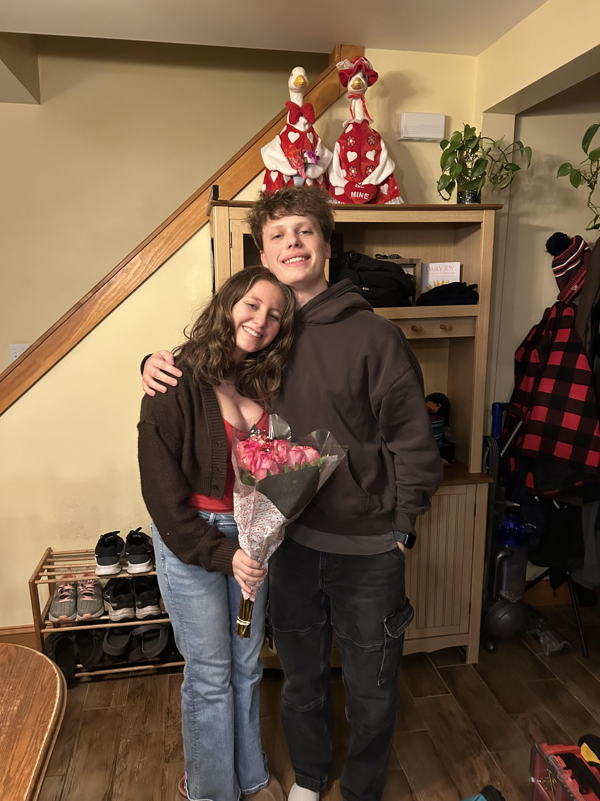
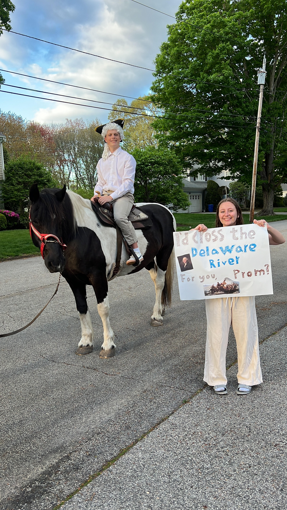
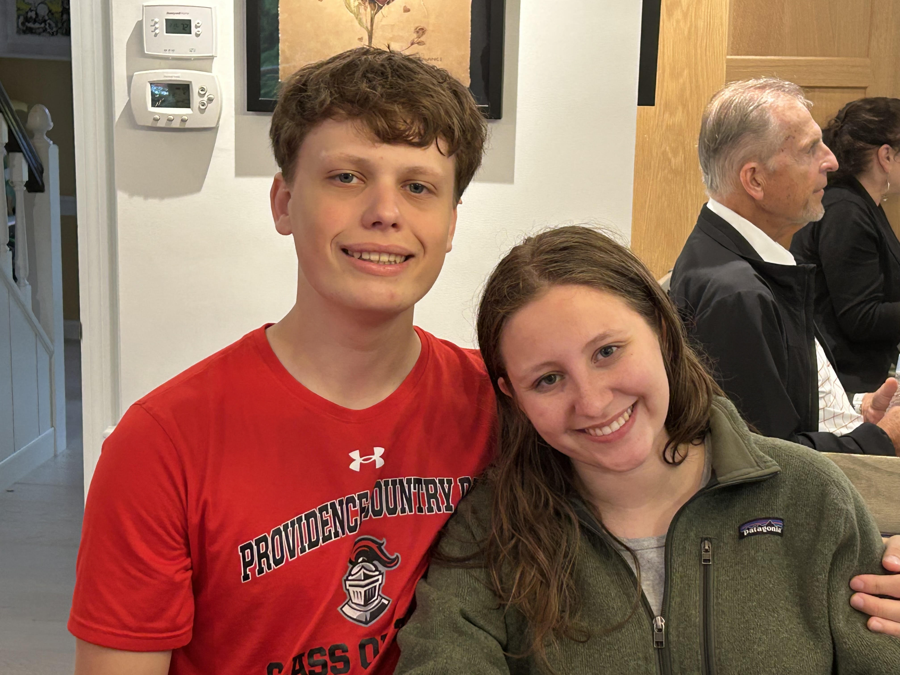
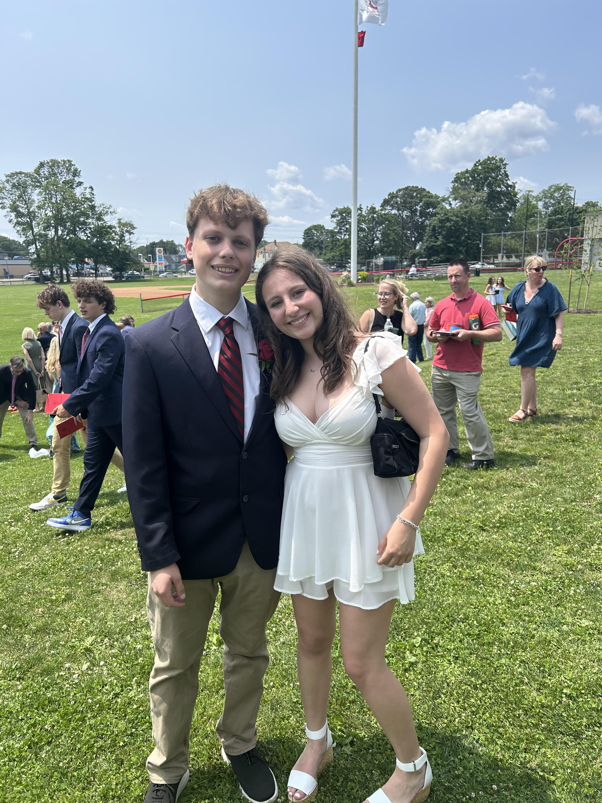
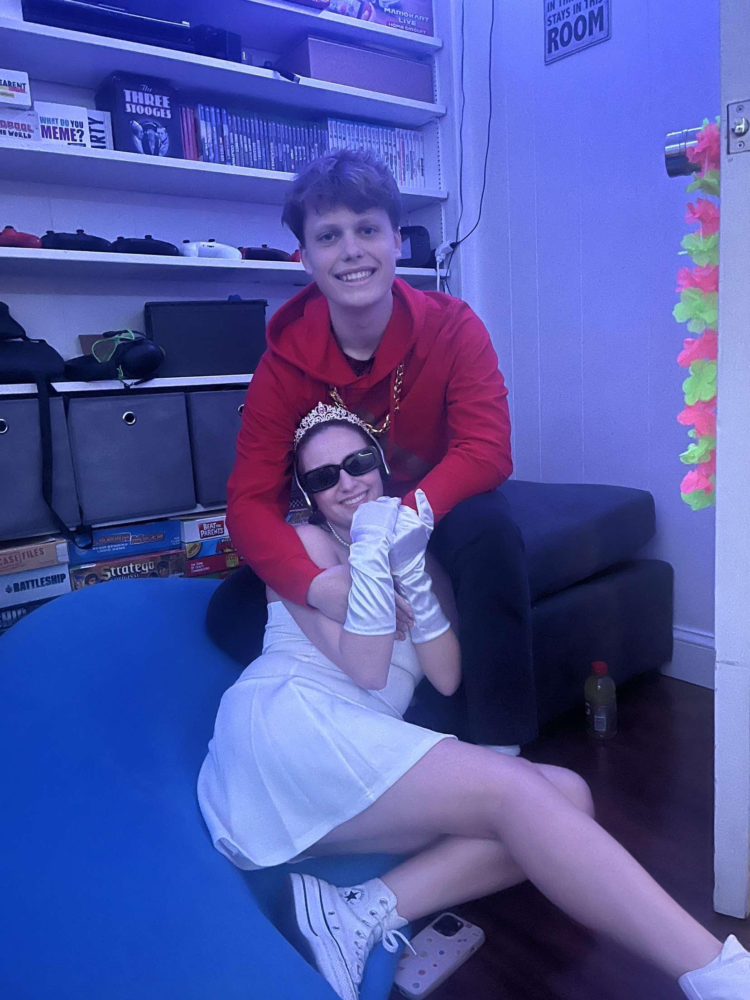